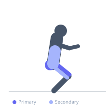

Exercise guide / Box Squat
Box Squat
The box squat involves sitting back onto a box or bench at the bottom of a squat movement before returning to standing. By sitting back to the box, the movement emphasizes hip-hinge mechanics and posterior chain engagement more than a standard back squat. The brief pause on the box eliminates momentum from the stretch-shortening reflex and teaches controlled descent with hip-dominant mechanics.
Primary muscles
gluteus maximus
rectus femoris
vastus lateralis
vastus medialis
Secondary muscles
biceps femoris long head
erector spinae
adductor magnus
Stabilizers
transverse abdominis
Equipment
Standard Barbell
Power Rack (Squat Cage)
Optional
Flat Bench


Starting position
- Position a sturdy box or bench of appropriate height (parallel or just below parallel) behind you. Set up as for a back squat with the bar on the upper traps.
Setup
- Choose a box height that positions your hips at or below parallel when seated. Stand close enough to the box that you will sit back onto it at the bottom without having to search for it.
Steps
- Step 1: Unrack the bar and position yourself directly in front of the box. Feet wider than shoulder-width is common. Brace the core.
- Step 2: Initiate the descent by sitting the hips back aggressively — more so than a standard back squat — while pushing the knees outward.
- Step 3: Sit fully onto the box in a controlled manner. Pause completely, maintaining core tension and an upright spine.
- Step 4: Drive forcefully through the entire foot — particularly the heel and midfoot — to stand back up. Do not lean forward excessively off the box.
- Step 5: Exhale at the top and reset.
Coaching cues
- Sit back — don't just sit down
- Stay tight on the box — don't relax
- Push the floor away, not forward
Breathing
- Inhale and brace before descent. Hold through the pause and ascent. Exhale at the top.
Range of motion
- Hips should reach the box when thighs are parallel to or below the floor.
Tempo
- 3-2-X-0 (controlled descent, 2s pause on box, explosive concentric)
Common mistakes
- Rocking forward on the box to build momentum instead of pausing with tension
- Using a box that is too high, which prevents reaching proper depth
- Placing feet too close together, reducing hip-back mechanics
Safety
- Ensure the box is stable and can support the weight of the lifter plus barbell
- Do not use a wheeled box or any unstable surface
Training
- strength: 2–5 reps
- hypertrophy: 5–10 reps
- endurance: 10–15 reps
- strength: 3–6 sets
- hypertrophy: 3–5 sets
- endurance: 2–4 sets
- Rest: {'strength': 240, 'hypertrophy': 120, 'endurance': 60}